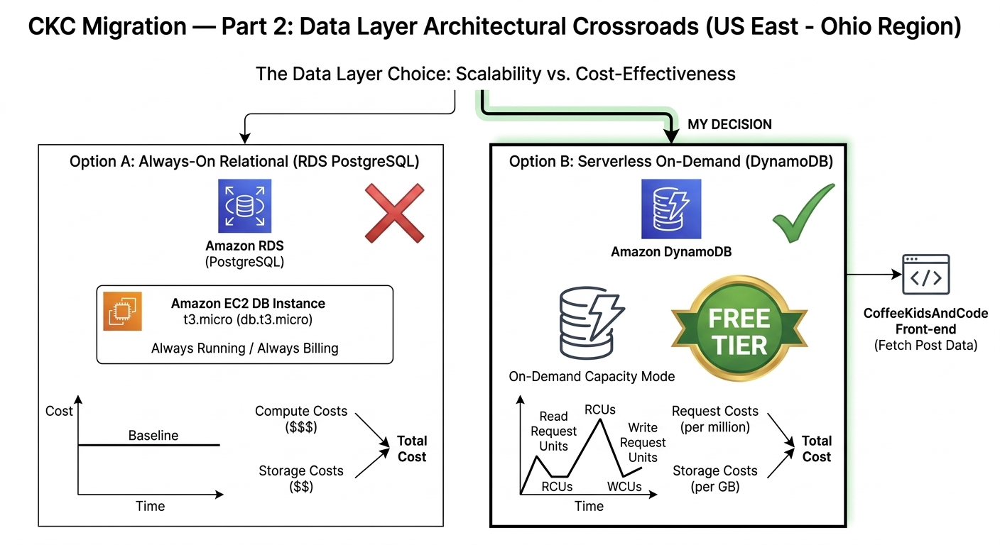

The CKC Migration: The Data Layer
In my last post, I got the frontend live on AWS Amplify. Now, it’s time to talk about the "brain" of the operation: the database. For a blog like CoffeeKidsAndCode, the data isn't just text—it's the foundation for every feature I plan to build next.
The Crossroads
I had two very different paths to choose from when deciding how to store my data. Every architect faces this choice: do you prioritize the traditional power of SQL, or the modern efficiency of Serverless?
- Option A (RDS PostgreSQL): The "Enterprise" Choice. It’s powerful and relational, but it’s "always-on," meaning it costs money every hour, even if no one is visiting the site.
- Option B (DynamoDB): The "Serverless" Choice. It’s a NoSQL database that scales instantly and stays within the AWS Free Tier.

Scalability vs. Cost: Why DynamoDB wins for a growing portfolio.
My Decision: DynamoDB
The "Why"
I chose DynamoDB because I wanted a database that matches the "pay-as-you-go" philosophy of the modern cloud. While I love SQL, DynamoDB forces me to think differently about data modeling. It proves I can build a system that is both incredibly cheap to run and capable of handling millions of requests without breaking the bank.
🛠 My Step-by-Step Guide: Setting Up Your Database
Setting up a database can feel intimidating, but DynamoDB makes it simple. Here is how I did it:
Step 1: Create Your Table
In your AWS Console, search for DynamoDB. Click "Create table". I named mine CKC_Posts. For the Partition Key, I used PostID (set to String). This is the unique ID for every blog post.
Step 2: Choose Your Settings
Keep the "Default settings" for now. This ensures you stay within the Free Tier. Scroll down and hit Create table. It only takes a few seconds to be "Active."
Step 3: Add Your First Post (The Manual Way)
Click on your new table and select "Explore table items". Click Create item. This is where I manually added my first post's data (Title, Content, Date, Category) just to make sure the "plumbing" was working.
Step 4: Connecting the Code
To get my Next.js app to talk to this table, I installed the AWS SDK in my project terminal:
npm install @aws-sdk/client-dynamodb @aws-sdk/lib-dynamodbOnce the SDK is installed, I created a helper function to fetch a post by its ID. This is how the frontend "asks" the cloud for our content:
import { DynamoDBClient } from "@aws-sdk/client-dynamodb";
import { DynamoDBDocumentClient, GetCommand } from "@aws-sdk/lib-dynamodb";
// Initialize the client
const client = new DynamoDBClient({ region: "us-east-2" });
const docClient = DynamoDBDocumentClient.from(client);
export async function getPost(postId) {
const command = new GetCommand({
TableName: "CKC_Posts",
Key: { PostID: postId },
});
const response = await docClient.send(command);
return response.Item;
}
Previous: Part 1 — The Hosting Platform